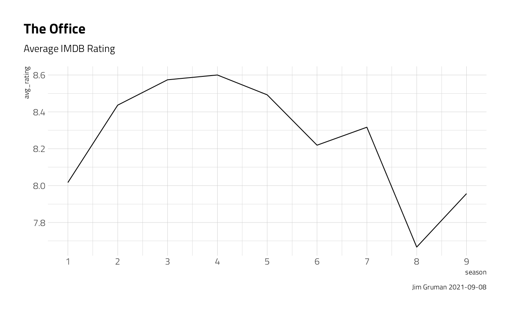
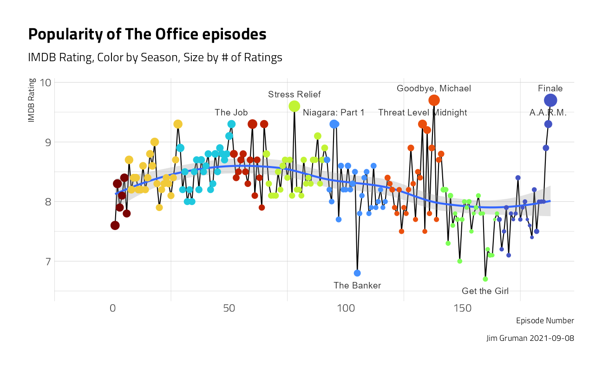
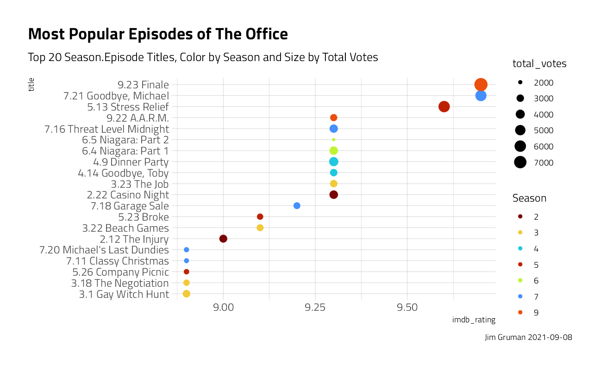
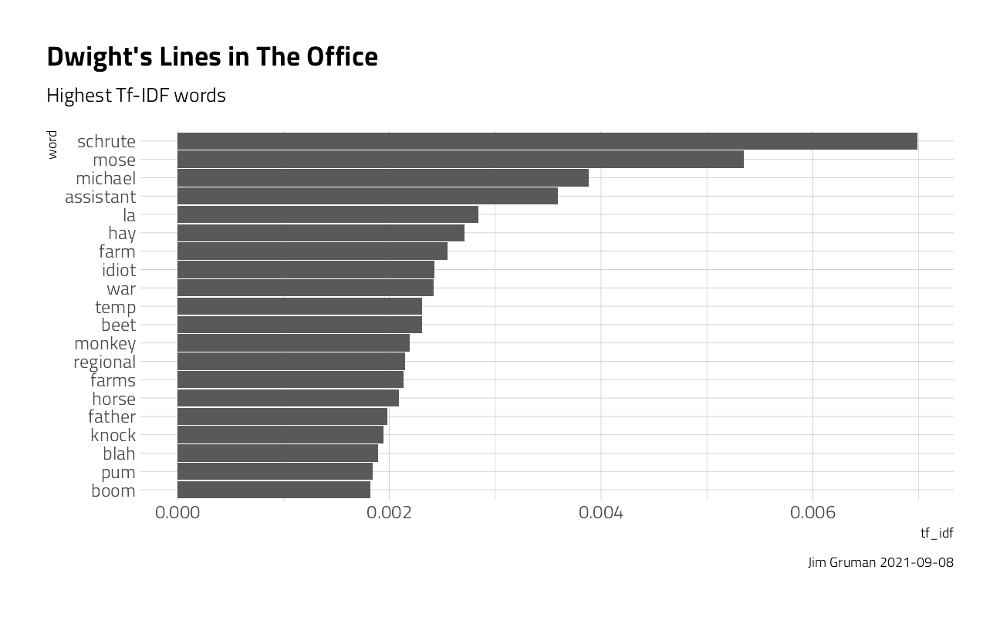
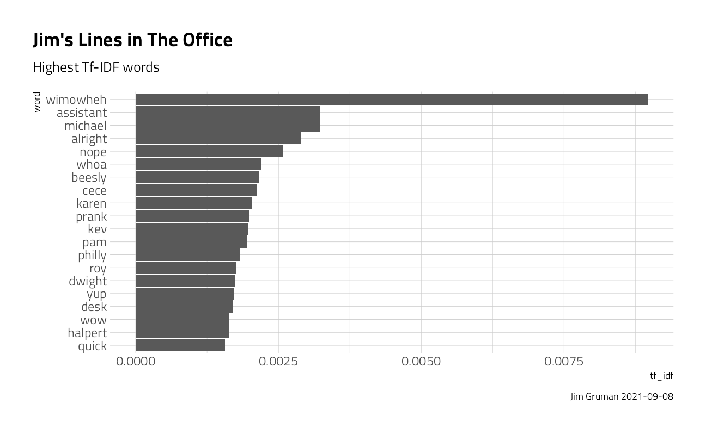
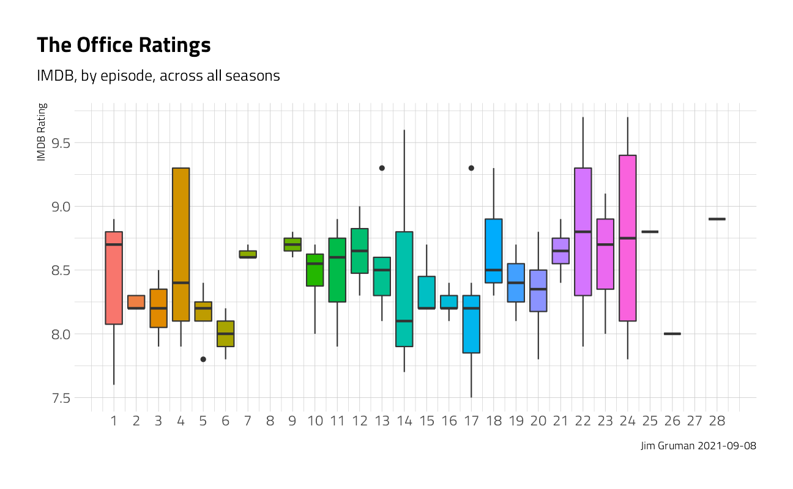
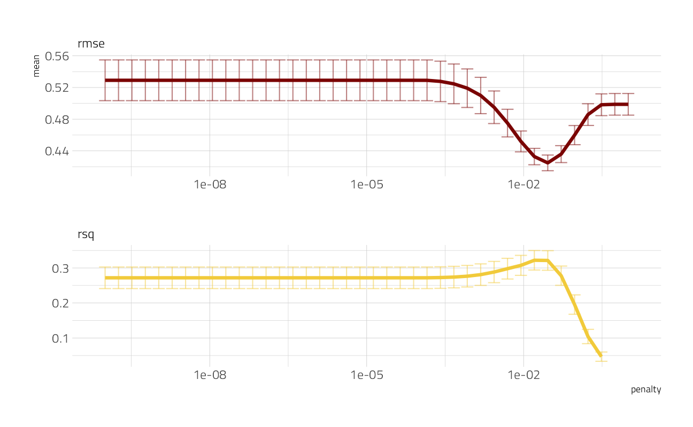

The Office for Tidy Tuesday
Jim Gruman
March 17, 2020
Last updated: 2021-09-08
Checks: 7 0
Knit directory: myTidyTuesday/
This reproducible R Markdown analysis was created with workflowr (version 1.6.2). The Checks tab describes the reproducibility checks that were applied when the results were created. The Past versions tab lists the development history.
Great! Since the R Markdown file has been committed to the Git repository, you know the exact version of the code that produced these results.
Great job! The global environment was empty. Objects defined in the global environment can affect the analysis in your R Markdown file in unknown ways. For reproduciblity it’s best to always run the code in an empty environment.
The command set.seed(20210907) was run prior to running the code in the R Markdown file. Setting a seed ensures that any results that rely on randomness, e.g. subsampling or permutations, are reproducible.
Great job! Recording the operating system, R version, and package versions is critical for reproducibility.
Nice! There were no cached chunks for this analysis, so you can be confident that you successfully produced the results during this run.
Great job! Using relative paths to the files within your workflowr project makes it easier to run your code on other machines.
Great! You are using Git for version control. Tracking code development and connecting the code version to the results is critical for reproducibility.
The results in this page were generated with repository version 8013a27. See the Past versions tab to see a history of the changes made to the R Markdown and HTML files.
Note that you need to be careful to ensure that all relevant files for the analysis have been committed to Git prior to generating the results (you can use wflow_publish or wflow_git_commit). workflowr only checks the R Markdown file, but you know if there are other scripts or data files that it depends on. Below is the status of the Git repository when the results were generated:
Ignored files:
Ignored: .Rhistory
Ignored: .Rproj.user/
Ignored: catboost_info/
Ignored: data/2021-09-08/
Ignored: data/acs_poverty.rds
Ignored: data/hike_data.rds
Ignored: data/us_states.rds
Ignored: data/weatherstats_toronto_daily.csv
Unstaged changes:
Modified: code/_common.R
Note that any generated files, e.g. HTML, png, CSS, etc., are not included in this status report because it is ok for generated content to have uncommitted changes.
These are the previous versions of the repository in which changes were made to the R Markdown (analysis/TheOffice.Rmd) and HTML (docs/TheOffice.html) files. If you’ve configured a remote Git repository (see ?wflow_git_remote), click on the hyperlinks in the table below to view the files as they were in that past version.
| File | Version | Author | Date | Message |
|---|---|---|---|---|
| Rmd | 8013a27 | opus1993 | 2021-09-08 | Add tweet, use common colors |
Lasso Regression using Tidymodels Workflows and The Office TidyTuesday DataSet
Our starting point is Julia Silge’s Blog, David Robinson’s screencast and the R4DS 2020 week 12 dataset. Also, Jared Lander delivered Many Ways To Lasso on a similar theme for the Chicago R User Group on 19 February, 2020. In this exercise, I will demonstrate how to build a LASSO regression model and choose regularization parameters.

The Office
Get the data
The data this week comes from the schrute R package for The Office transcripts and data.world for IMDB ratings of each episode.
# Get the Data
office_ratings <- readr::read_csv("https://raw.githubusercontent.com/rfordatascience/tidytuesday/master/data/2020/2020-03-17/office_ratings.csv")Explore the data
Our modeling goal here is to predict the IMDB ratings for episodes of The Office based on the other characteristics of the episodes in the #TidyTuesday dataset. There are two datasets, one with the ratings and one with information like director, writer, and which character spoke which line. The episode numbers and titles are not consistent between them, so we can use regular expressions to do a better job of matching the datasets up for joining.
office_ratings %>%
group_by(season) %>%
summarize(avg_rating = mean(imdb_rating)) %>%
ggplot(aes(season, avg_rating)) +
geom_line() +
scale_x_continuous(breaks = 1:9) +
labs(
title = "The Office",
subtitle = "Average IMDB Rating",
caption = paste0("Jim Gruman ", Sys.Date())
)
office_ratings %>%
mutate(
top_title = ifelse(imdb_rating >= 9.2 | imdb_rating <= 7,
title, ""
),
title = fct_inorder(title),
episode_number = row_number()
) %>%
ggplot(aes(episode_number, imdb_rating)) +
geom_line() +
geom_smooth(alpha = 0.3, method = "loess", formula = y ~ x) +
geom_point(aes(color = factor(season), size = total_votes)) +
geom_text(aes(
label = top_title,
y = if_else(imdb_rating > 8,
imdb_rating + 0.2,
imdb_rating - 0.2
)
),
check_overlap = TRUE,
hjust = 0.5
) +
expand_limits(x = -15) +
labs(
title = "Popularity of The Office episodes",
subtitle = "IMDB Rating, Color by Season, Size by # of Ratings",
caption = paste0("Jim Gruman ", Sys.Date())
) +
theme(
panel.grid.major.x = element_blank(),
legend.position = "none"
) +
labs(x = "Episode Number", y = "IMDB Rating")
office_ratings %>%
arrange(desc(imdb_rating)) %>%
mutate(
title = paste0(season, ".", episode, " ", title),
title = fct_reorder(title, imdb_rating)
) %>%
head(20) %>%
ggplot(aes(title, imdb_rating, color = factor(season), size = total_votes)) +
geom_point() +
coord_flip() +
labs(
color = "Season",
title = "Most Popular Episodes of The Office",
subtitle = "Top 20 Season.Episode Titles, Color by Season and Size by Total Votes", caption = paste0("Jim Gruman ", Sys.Date())
)
To merge the datasets on episode, we have to clean the ratings file field by removing punctuation, digits, the words “part” and “parts”, and make all text lower case. Even after cleaning, three episode titles have to be manually imputed with a case_when statement to successfully join every episode rating with the text of the episode.
remove_regex <- "[:punct:]|[:digit:]|parts |part |the |and"
office_ratings <- office_ratings %>%
transmute(
episode_name = str_to_lower(title),
episode_name = str_remove_all(episode_name, remove_regex),
episode_name = str_trim(episode_name),
imdb_rating
)
office_ratings <- office_ratings %>%
mutate(episode_name = case_when(
episode_name == "email surveillance" ~ "email surveilance",
episode_name == "coverup" ~ "cover",
episode_name == "sex ed" ~ "sx ed",
TRUE ~ episode_name
))
office_info <- schrute::theoffice %>%
mutate(
season = as.numeric(season),
episode = as.numeric(episode),
episode_name = str_to_lower(episode_name),
episode_name = str_remove_all(episode_name, remove_regex),
episode_name = str_trim(episode_name)
) %>%
select(season, episode, episode_name, director, writer, character)Lets explore words that individual characters say, that other characters do not, that are most indicative of that person.
In information retrieval, tf–idf or TFIDF, short for term frequency–inverse document frequency, is a numerical statistic that is intended to reflect how important a word is to a document in a collection or corpus. It is often used as a weighting factor in searches of information retrieval, text mining, and user modeling. The tf–idf value increases proportionally to the number of times a word appears in the document and is offset by the number of documents in the corpus that contain the word, which helps to adjust for the fact that some words appear more frequently in general. tf–idf is one of the most popular term-weighting schemes today.
office_transcripts <- as_tibble(schrute::theoffice)
blacklist <- c("yeah", "hey", "uh", "gonna", "lot", "ah", "huh", "hmm", "um", "ha", "na", "no", "nah", "ahh")
blacklist_character <- c("Group", "Everyone", "All")
transcript_words <- office_transcripts %>%
group_by(character) %>%
filter(
n() >= 100,
n_distinct(episode_name) > 2
) %>%
ungroup() %>%
select(-text_w_direction) %>%
unnest_tokens(word, text) %>%
anti_join(stop_words, by = "word") %>%
filter(
!word %in% blacklist,
!character %in% blacklist_character
)
character_tf_idf <- transcript_words %>%
add_count(word) %>%
filter(n > 20) %>%
count(word, character) %>%
bind_tf_idf(word, character, n) %>%
arrange(desc(tf_idf))Let’s explore the content of Dwight’s and Jim’s lines. What words are most characteristic, or specific, to the character, with a high term frequency and low overall IDF.
character_tf_idf %>%
filter(character == "Dwight") %>%
mutate(word = fct_reorder(word, tf_idf)) %>%
head(20) %>%
ggplot(aes(word, tf_idf)) +
geom_col() +
coord_flip() +
labs(
title = "Dwight's Lines in The Office",
subtitle = "Highest Tf-IDF words",
caption = paste0("Jim Gruman ", Sys.Date())
)
character_tf_idf %>%
filter(character == "Jim") %>%
mutate(word = fct_reorder(word, tf_idf)) %>%
head(20) %>%
ggplot(aes(word, tf_idf)) +
geom_col() +
coord_flip() +
labs(
title = "Jim's Lines in The Office",
subtitle = "Highest Tf-IDF words",
caption = paste0("Jim Gruman ", Sys.Date())
)
character_tf_idf %>%
filter(character %in% c("Jim", "Dwight", "Michael", "Meredith")) %>%
group_by(character) %>%
top_n(10, tf_idf) %>%
ungroup() %>%
mutate(word = reorder_within(word, tf_idf, character)) %>%
ggplot(aes(word, tf_idf, fill = character)) +
geom_col(show.legend = FALSE) +
coord_flip() +
scale_x_reordered() +
facet_wrap(~character, scales = "free") +
labs(
title = "Character Lines in The Office",
subtitle = "Words most specific to a character",
caption = paste0("Jim Gruman ", Sys.Date()),
x = "", y = "TF-IDF of character-word pairs"
)
We are going to use several different kinds of features for modeling. Let’s find out how many times characters speak per episode.
characters <- office_info %>%
count(episode_name, character) %>%
add_count(character, wt = n, name = "character_count") %>%
filter(character_count > 800) %>%
select(-character_count) %>%
pivot_wider(
names_from = character,
values_from = n,
values_fill = list(n = 0)
)And, let’s find which directors and writers are involved in each episode. I’m choosing here to combine this into one category in modeling, for a simpler model, since these are often the same individuals. And we will only model on creators that were involved in at least 15 distinct episodes.
creators <- office_info %>%
distinct(episode_name, director, writer) %>%
pivot_longer(director:writer, names_to = "role", values_to = "person") %>%
separate_rows(person, sep = ";") %>%
add_count(person) %>%
filter(n > 15) %>%
distinct(episode_name, person) %>%
mutate(person_value = 1) %>%
pivot_wider(
names_from = person,
values_from = person_value,
values_fill = list(person_value = 0)
)Next, let’s find the season and episode number for each episode, and then finally put it all together into one dataset for modeling.
office <- office_info %>%
distinct(season, episode, episode_name) %>%
inner_join(characters) %>%
inner_join(creators) %>%
inner_join(office_ratings %>%
select(episode_name, imdb_rating)) %>%
janitor::clean_names()One more quick peek into the dataset. This time, across all seasons, do the ratings of the episodes follow a pattern through the course of the season? Ratings appear to be higher for episodes later in the season. What else is associated with higher ratings? Let’s use LASSO regression to find out!
office %>%
ggplot(aes(episode,
imdb_rating,
fill = as.factor(episode)
)) +
geom_boxplot(show.legend = FALSE) +
scale_x_continuous(breaks = 1:28) +
labs(
title = "The Office Ratings",
subtitle = "IMDB, by episode, across all seasons",
caption = paste0("Jim Gruman ", Sys.Date()),
x = NULL, y = "IMDB Rating"
)
Train a Model
We can start by splitting our data into training and testing sets.
office_split <- initial_split(office, strata = season)
office_train <- training(office_split)
office_test <- testing(office_split)Then, we build a recipe for data preprocessing.
First, we must tell the recipe() what our model is going to be (using a formula here) and what our training data is.
Next, we update the role for episode_name, since this is a variable we might like to keep around for convenience as an identifier for rows but is not a predictor or outcome.
Next, we remove any numeric variables that have zero variance.
As a last step, we normalize (center and scale) the numeric variables. We need to do this because it’s important for LASSO regularization.
The object office_rec is a recipe that has not been trained on data yet (for example, the centered and scaling has not been calculated) and office_prep is an object that has been trained on data. The reason I use strings_as_factors = FALSE here is that my ID column episode_name is of type character (as opposed to, say, integers).
office_rec <- recipe(imdb_rating ~ ., data = office_train) %>%
update_role(episode_name, new_role = "ID") %>%
step_zv(all_numeric(), -all_outcomes()) %>%
step_normalize(all_numeric(), -all_outcomes())
office_prep <- office_rec %>%
prep(strings_as_factors = FALSE) # the episode ID column remains a stringNow it’s time to specify and then fit our models. Here I set up one model specification for LASSO regression; I picked a value for penalty (sort of randomly) and I set mixture = 1 for LASSO. I am using a workflow() in this example for convenience; these are objects that can help you manage modeling pipelines more easily, with pieces that fit together like Lego blocks. You can fit() a workflow, much like you can fit a model.
lasso_spec <- linear_reg(penalty = 0.1, mixture = 1) %>%
set_engine("glmnet")
wf <- workflow() %>%
add_recipe(office_rec)
lasso_fit <- wf %>%
add_model(lasso_spec) %>%
fit(data = office_train)If you have used glmnet before, this is the familiar output where we can see (here, for the most regularized examples) the features that contribute to higher IMDB ratings.
Tune LASSO parameters
So we managed to fit one LASSO model, but how do we know the right regularization parameter penalty? We can figure that out using resampling and tuning the model. Let’s build a set of bootstrap resamples, and set penalty = tune() instead of to a single value. We can use a function penalty() to set up an appropriate grid for this kind of regularization model.
set.seed(42)
office_boot <- bootstraps(office_train, strata = season)
tune_spec <- linear_reg(penalty = tune(), mixture = 1) %>%
set_engine("glmnet")
lambda_grid <- grid_regular(penalty(), levels = 40)Now it’s time to tune the grid, using our workflow object.
all_cores <- parallelly::availableCores(omit = 1)
all_coressystem
11 future::plan("multisession", workers = all_cores) # on Windows
set.seed(42)
lasso_grid <- tune_grid(
wf %>% add_model(tune_spec),
resamples = office_boot,
grid = lambda_grid
)Let’s take a look at a visualization of performance with the regularization parameter.
lasso_grid %>%
collect_metrics() %>%
ggplot(aes(penalty, mean, color = .metric)) +
geom_errorbar(aes(
ymin = mean - std_err,
ymax = mean + std_err
),
alpha = 0.5
) +
geom_line(size = 1.5) +
facet_wrap(~.metric, scales = "free", nrow = 2) +
scale_x_log10() +
theme(legend.position = "none")
This is a great way to see that regularization helps this modeling a lot. We have a couple of options for choosing our final parameter, such as select_by_pct_loss() or select_by_one_std_err(), but for now let’s stick with just picking the lowest RMSE. After we have that parameter, we can finalize our workflow, i.e. update it with this value.
lowest_rmse <- lasso_grid %>%
select_best("rmse")
final_lasso <- finalize_workflow(
wf %>% add_model(tune_spec),
lowest_rmse
)
final_lasso== Workflow ====================================================================
Preprocessor: Recipe
Model: linear_reg()
-- Preprocessor ----------------------------------------------------------------
2 Recipe Steps
* step_zv()
* step_normalize()
-- Model -----------------------------------------------------------------------
Linear Regression Model Specification (regression)
Main Arguments:
penalty = 0.0289426612471674
mixture = 1
Computational engine: glmnet The optimal penalty is shown here as 0.0289
We can then fit this finalized workflow on our training data. While we’re at it, let’s see what the most important variables are using the vip package.
final_lasso %>%
fit(office_train) %>%
pull_workflow_fit() %>%
vip::vi(lambda = lowest_rmse$penalty) %>%
mutate(
Importance = abs(Importance),
Variable = fct_reorder(Variable, Importance)
) %>%
ggplot(aes(x = Importance, y = Variable, fill = Sign)) +
geom_col() +
scale_x_continuous(expand = c(0, 0)) +
labs(y = NULL)
Clearly, the features with the greatest importance in predicting IMDB rating include the presence of Greg Daniels, Michael, the episode itself, B J Novak, and Jan.
And then, finally, let’s return to our test data. The tune package has a function last_fit() which is nice for situations when you have tuned and finalized a model or workflow and want to fit it one last time on your training data and evaluate it on your testing data. You only have to pass this function your finalized model/workflow and your split.
last_fit(
final_lasso,
office_split
) %>%
collect_metrics() %>%
knitr::kable()| .metric | .estimator | .estimate | .config |
|---|---|---|---|
| rmse | standard | 0.5326722 | Preprocessor1_Model1 |
| rsq | standard | 0.0698854 | Preprocessor1_Model1 |
The tweet for week 12 of 2020:
tweetrmd::include_tweet("https://twitter.com/jim_gruman/status/1241190749829545988")#TidyTuesday Week 12 - #TheOffice
— Jim Grumanüìöüöµ‚Äç‚ôÇÔ∏è‚öô (@jim_gruman) March 21, 2020
Finding drivers for the IMDB ratings for each episode of The Office, for the characters and the writers involvedhttps://t.co/9ZRtO79myn#rstats #dataviz #r4ds pic.twitter.com/T8TxACqe0L
sessionInfo()R version 4.1.1 (2021-08-10)
Platform: x86_64-w64-mingw32/x64 (64-bit)
Running under: Windows 10 x64 (build 19043)
Matrix products: default
locale:
[1] LC_COLLATE=English_United States.1252
[2] LC_CTYPE=English_United States.1252
[3] LC_MONETARY=English_United States.1252
[4] LC_NUMERIC=C
[5] LC_TIME=English_United States.1252
attached base packages:
[1] stats graphics grDevices utils datasets methods base
other attached packages:
[1] glmnet_4.1-2 Matrix_1.3-4 vctrs_0.3.8 rlang_0.4.11
[5] vip_0.3.2 tidytext_0.3.1 forcats_0.5.1 stringr_1.4.0
[9] readr_2.0.1 tidyverse_1.3.1 yardstick_0.0.8 workflowsets_0.1.0
[13] workflows_0.2.3 tune_0.1.6 tidyr_1.1.3 tibble_3.1.4
[17] rsample_0.1.0 recipes_0.1.16 purrr_0.3.4 parsnip_0.1.7.900
[21] modeldata_0.1.1 infer_1.0.0 ggplot2_3.3.5 dplyr_1.0.7
[25] dials_0.0.9.9000 scales_1.1.1 broom_0.7.9 tidymodels_0.1.3
[29] workflowr_1.6.2
loaded via a namespace (and not attached):
[1] readxl_1.3.1 backports_1.2.1 systemfonts_1.0.2
[4] plyr_1.8.6 schrute_0.2.2 splines_4.1.1
[7] listenv_0.8.0 SnowballC_0.7.0 digest_0.6.27
[10] foreach_1.5.1 htmltools_0.5.2 viridis_0.6.1
[13] fansi_0.5.0 magrittr_2.0.1 tzdb_0.1.2
[16] globals_0.14.0 modelr_0.1.8 gower_0.2.2
[19] extrafont_0.17 vroom_1.5.4 R.utils_2.10.1
[22] extrafontdb_1.0 hardhat_0.1.6 colorspace_2.0-2
[25] rvest_1.0.1 textshaping_0.3.5 haven_2.4.3
[28] xfun_0.25 crayon_1.4.1 jsonlite_1.7.2
[31] survival_3.2-11 iterators_1.0.13 glue_1.4.2
[34] gtable_0.3.0 ipred_0.9-11 R.cache_0.15.0
[37] tweetrmd_0.0.9 Rttf2pt1_1.3.9 shape_1.4.6
[40] future.apply_1.8.1 DBI_1.1.1 Rcpp_1.0.7
[43] viridisLite_0.4.0 bit_4.0.4 GPfit_1.0-8
[46] lava_1.6.10 prodlim_2019.11.13 httr_1.4.2
[49] ellipsis_0.3.2 farver_2.1.0 R.methodsS3_1.8.1
[52] pkgconfig_2.0.3 nnet_7.3-16 sass_0.4.0
[55] dbplyr_2.1.1 janitor_2.1.0 utf8_1.2.2
[58] here_1.0.1 labeling_0.4.2 tidyselect_1.1.1
[61] DiceDesign_1.9 later_1.3.0 munsell_0.5.0
[64] cellranger_1.1.0 tools_4.1.1 cachem_1.0.6
[67] cli_3.0.1 generics_0.1.0 evaluate_0.14
[70] fastmap_1.1.0 yaml_2.2.1 ragg_1.1.3
[73] rematch2_2.1.2 bit64_4.0.5 knitr_1.33
[76] fs_1.5.0 nlme_3.1-152 future_1.22.1
[79] whisker_0.4 R.oo_1.24.0 xml2_1.3.2
[82] tokenizers_0.2.1 compiler_4.1.1 rstudioapi_0.13
[85] curl_4.3.2 reprex_2.0.1 lhs_1.1.1
[88] bslib_0.3.0 stringi_1.7.4 highr_0.9
[91] gdtools_0.2.3 hrbrthemes_0.8.0 lattice_0.20-44
[94] styler_1.5.1 conflicted_1.0.4 pillar_1.6.2
[97] lifecycle_1.0.0 furrr_0.2.3 jquerylib_0.1.4
[100] httpuv_1.6.2 R6_2.5.1 promises_1.2.0.1
[103] gridExtra_2.3 janeaustenr_0.1.5 parallelly_1.27.0
[106] codetools_0.2-18 MASS_7.3-54 assertthat_0.2.1
[109] rprojroot_2.0.2 withr_2.4.2 mgcv_1.8-36
[112] parallel_4.1.1 hms_1.1.0 grid_4.1.1
[115] rpart_4.1-15 timeDate_3043.102 class_7.3-19
[118] snakecase_0.11.0 rmarkdown_2.10 git2r_0.28.0
[121] pROC_1.18.0 lubridate_1.7.10